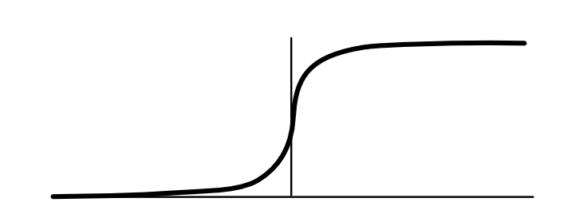
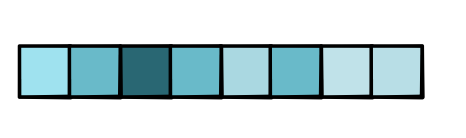
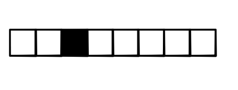

Softmax¶
Sigmoid¶
So far, the key function that we have relied on for calculating loss is the sigmoid function. As visualized below, it goes to zero for large negative inputs, and goes to 1 for large positive inputs. In between, it forms a smooth S-curve.
{kind=link}
As we saw in Module 1, sigmoid function makes it easier to aply auto-differentiation when training our models. It can be thought of as a smooth version of the step function \(x > 0\), which signals whether \(x\) is greater than zero by returning a binary value. Another way to write this step function is \(step(x) = argmax\{0, x\}\), i.e. returns which argument is bigger, 0 or 1. Whereas step function returns a binary choice, sigmoid function gives a "softer" differentiable choice.
We can connect sigmoid function to another function that we have used in previous MiniTorch Modules: the ReLU function that we use for activations. Recall that this function is defined as \(ReLU(x) = max\{ 0, x\}\) with the following derivative function:
{kind=link}
As a summary, we can connect the above three functions:
Function |
Comparison (x with 0) |
|---|---|
ReLU |
Max |
Step |
Arg Max |
Sigmoid |
"Soft" Max |
Multiclass¶
The sigmoid function works great for binary classification problems. However, for many problems, we may want to do multiclass classification, where we have \(K\) possible output classes to select from. For these problems, we can assume that the model should output a \(K\)-dimensional vector which gives a score for each of the K possible classes:
Naturally, we pick the output class that has the highest score. Given a vector, argmax function returns a one-hot vector with 1 at the position of the highest-scored element and 0 for all other elements:
While argmax function seems a bit different at the first glance, we can view it as a generalization of the \(x > 0\) function: each position is either 0 or 1. We can also see that its derivative will be zero almost everywhere: a small perturbation to the input will not change the output value.
In order to fix this issue, we need a soft version of the argmax function, just like sigmoid function smooths over the input changes. The generalization of sigmoid function is appropriately known as the softmax function, which is computed as:
Like the sigmoid function, every value of softmax function is between 0 and 1, and a small change to any of the input scores will result in a change to all of the output values.
As the softmax function requires exponentiating the input scores, it can be numerically unstable in practice. Therefore it is common to use a numerical trick to compute the log of the softmax function instead:
where \(m\) is the max element of \(\textbf{x}\). This trick is common enough that there is a nice derivation on wikipedia. (This is a pratical trick for sigmoid function as well, which we ignored in earlier modules.)
Speaking of max, we can add a max operator to our code base. We can compute the max of a vector (or tensor in general) as a reduction, which returns the single highest-scored element in the input. Intuitively, we can think about how small changes to the input impact this returned value. Ignoring ties, only the element that has the highest score will have a non-zero derivative, and its derivative will be 1. Thereforce the gradient of the max reduction is a one-hot vector with 1 for the highest-scored element, i.e. the argmax function.
Here is a summary of how functions for binary classficiaiton connect with functions for multiclass classification:
Binary |
Multiclass |
|---|---|
ReLU |
Max |
Step |
Argmax |
Sigmoid |
Softmax |